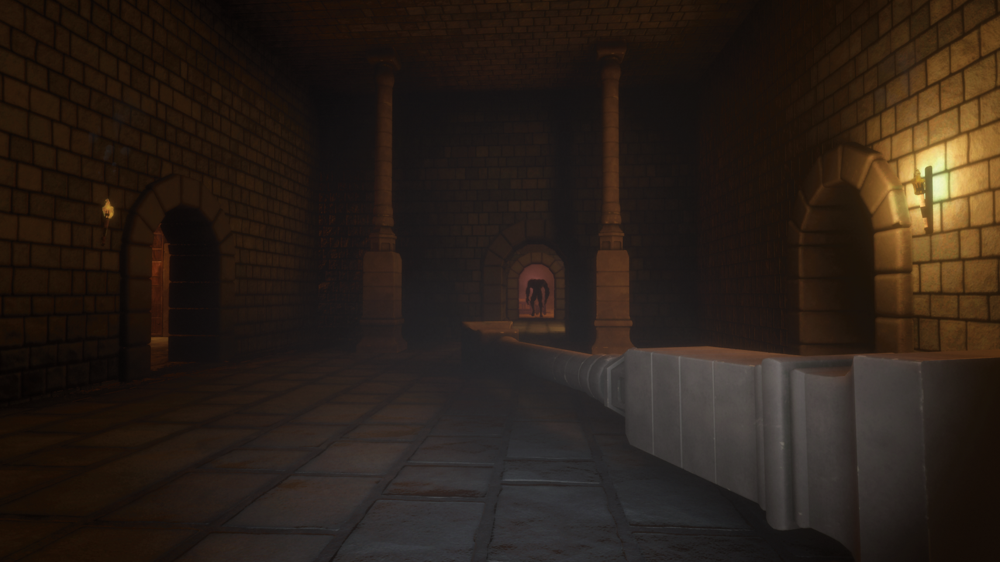

Projects
Metaballs_Multithreaded | Dark Acropolis | Regiment AI | Quadrapedal Character Controller | OpenGL Graphics Engine | Attack on Titan TGTG
Dark Acropolis
Dark Acropolis is a first person thriller game where you must explore a castle whilst evading a monster. In order to win you have to find and destroy all the 'seals' so that you can destroy the monsters heart which is also hidden in the castle. It is important to stay hidden but if you are discovered, you are equipped with a magic gauntlet which you can use to flash and blind the monster temporarily, to get away. However, you have limited charges to your gauntlet and need to break seals to get more.
This game was made in Unity and I worked on it with a team consisting of 3 designers, 4 artists and two programmers, including myself.


I was the lead programmer on the team and so my role, other documentation, consisted of designing and implementing the AI which was our major feature and some gameplay elements.
I specifically worked on all the AI and monster related stuff(including the animation controller but excluding sound), the gauntlet(animation and gems) and some
other gameplay stuff.
My programming partner did the audio and UI programming and the character controller.
The AI I chose to implement for the monster, was a AI directly inspired by Alien Isolation, where there is a monster AI and a director AI. The premise is that the monster has no advantage over the player, information wise, and the director AI has information on both the monster and the player. The director AI then works to make the game interesting by applying pressure on the player by giving the monster a hint if it is struggling to find the player but also be fair by releasing the pressure when the player has seemingly been in long high stress scenarios.
The way I've implemented this is by having the director measure the players stress based of player proximity to the monster and whether or not the player has seen the
monster. This measure is called the 'menace gauge' in Alien Isolation which I also adopted.
If the conditions for our 'menace gauge' are not met, then the 'menace gauge' decreases and when it gets too low, the director will give the monster a vague clue as to where the player might be. In our
system, the map is seperated as areas and the areas are cut up as rooms. A vague clue in our case is the director will tell the monster which area to search.
If the conditions are met however, the 'menace gauge' will increase and when it gets too high, the monster will recieve no clues for a while and will have to find the player with no information whatsoever.
I created 3 main scripts for this duo AI. The directior AI, the Monsters script for Line of sight/animations/sounds/etc for the monster, and a decision making script for the monster.
The director AI ended up being easier to implement than I had initially expected and the monster script did take quite a-bit of work, especially when trying to make
line of sight work favourbly for the monster but also feel natural to the player. The monster's decision making script was the hardest out of the 3 to make and the biggest challenge was to make the monster able to attempt to track the player when he lost them in a chase properly and without omniscience. Pretty much acting purely on line of sight and 'what it knew' such as the last room the monster saw the player in.
It didn't have to be very accurate but it needed to be reliable, intelligent and seem fair to the player.
In order to solve this I did some theorising in my note book and had two initial ideas.
My first idea was to have the monster guess off the adjacent rooms to the room the player or monster(depends on who and who isn't in a room as per how the monster last saw them) were last in. This sounded good but I knew that it would cause a-lot code for covering specific situations according to the monster and players positioning.
My second idea was to guess the room that was closest to the monster by navmesh path length(excluding the monsters last room), however I knew that this solution was very simple and when theorising in my notes I foresaw that there could be issues with this.